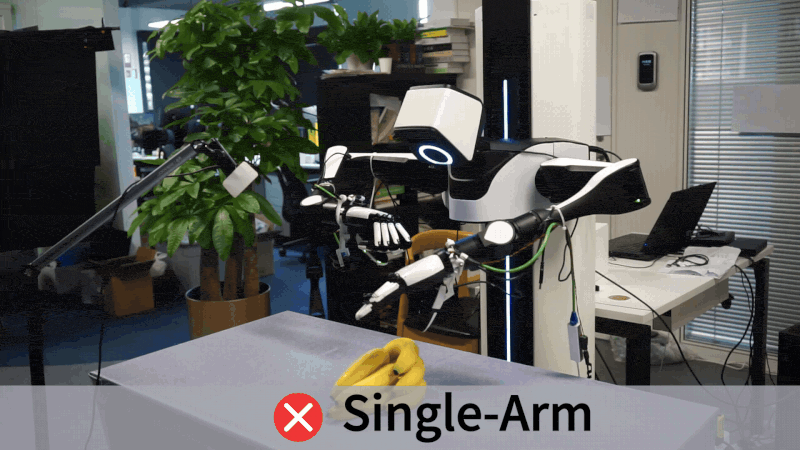
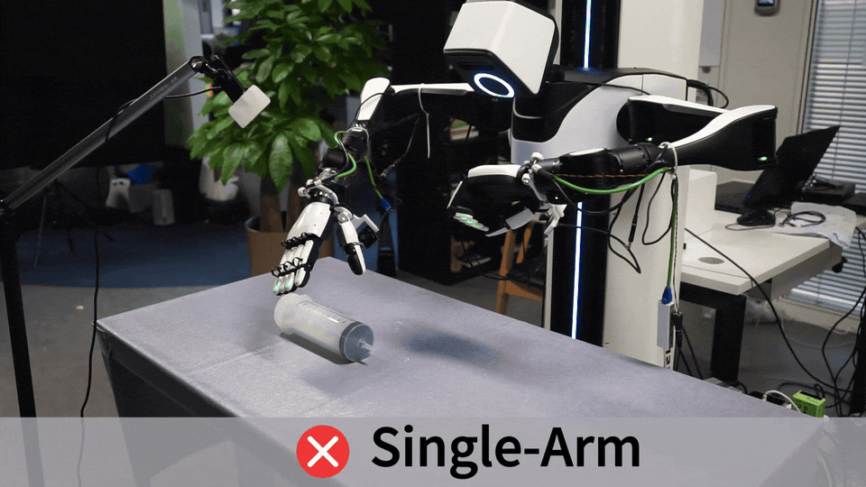
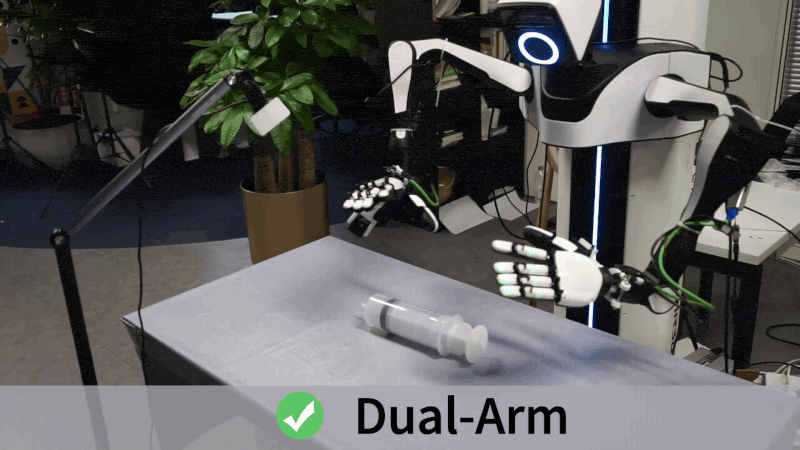
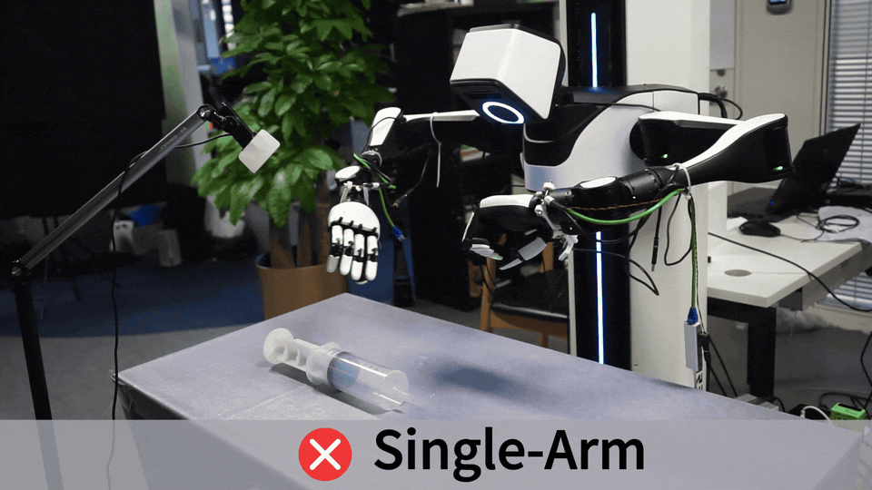
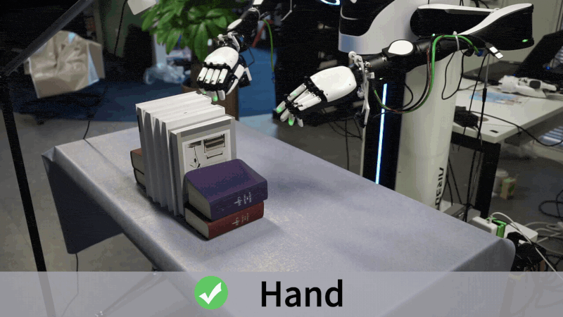
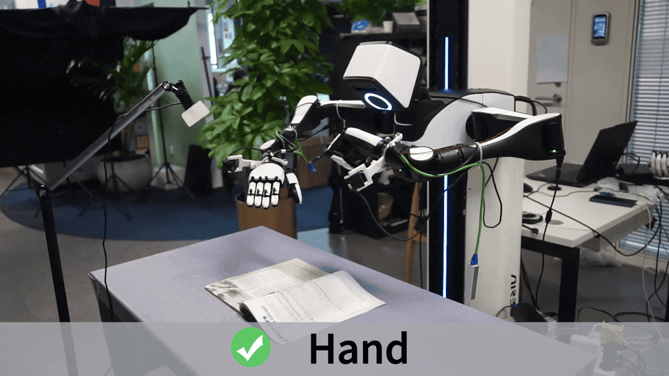
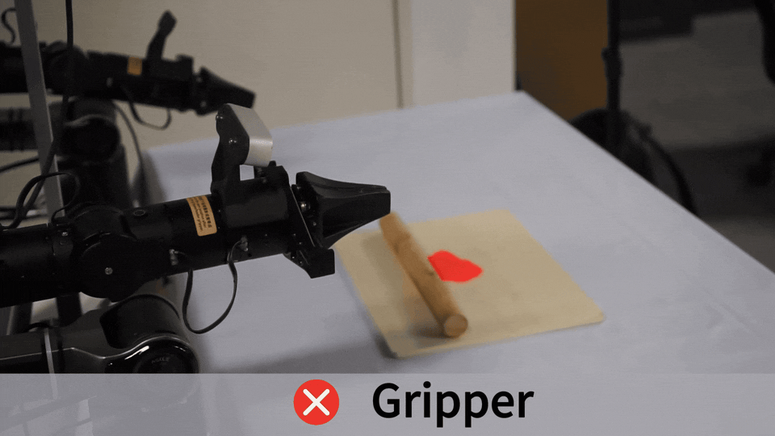
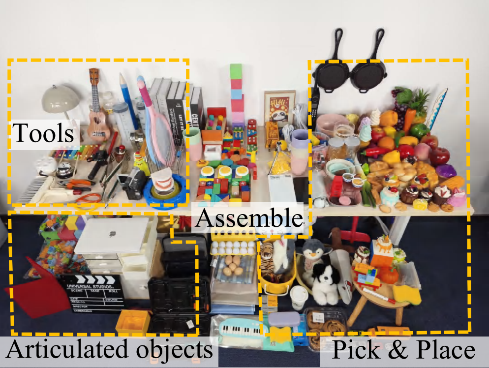
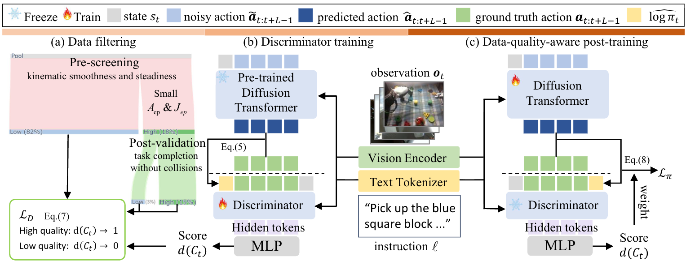

Motivation
Dual-Arm

Break Banana (Single-Arm)

Break Banana (Dual-Arm)

Pull Piston (Single Arm)

Pull Piston (Dual-Arm)

Push Piston (Single-Arm)

Push Piston (Dual-Arm)
Dual-Hand

Fetch Book (Gripper)

Fetch Book (Hand)

Flip Book (Gripper)

Flip Book (Hand)

Roll Dough (Gripper)

Roll Dough (Hand)

Use Pen (Gripper)

Use Pen (Hand)
Dexterous

Twist Cap (6-DoF Hand)

Twist Cap (12-DoF Hand)
Teleoperation System
The operator teleoperates the physical robot and its MujoCo digital twin, so apple→plate demonstrations are collected in real and simmulation under the same interface, thereby reducing the sim-to-real gap.
Dataset
Simulation
297 objects
30 categories
200 tasks
100K trajectories
6.5M frames
361h video
Open Source
Lerobot v2.1 format
Real World

347 objects
17 categories
200 tasks
10K trajectories
3.2M frames
177.5h video
Open Source
Lerobot v2.1 format
Method

(a) Data filtering: From the real-world dataset we pre-screen demonstrations by kinematic smoothness (low acceleration and jerk), then replay them for post-validation and keep the clips that complete the task without collisions, forming a high-quality subset.
(b) Discriminator training: With the pretrained diffusion–transformer policy frozen, we compute a log-π proxy for each clip and train a discriminator that, conditioned on observations and language, outputs a quality score d(Ct) ∈ (0,1].
(c) Data-quality-aware post-training: During post-training, the score d(Ct) is converted to weights wi and used in the diffusion loss Lπ. At inference time, only the policy is used.
Basic Tasks Demonstration
Pick and Place
Place Apple on Plate
Place Bowl into Bowl
Put Two Eggs into Box (Bimanual)
Lift Basket (Bimanual)
Move Block to Right Plate (Bimanual)
Assemble/Disassemble
Stack Ring Blocks
Grab Square Blocks
Place Kettle on Base
Remove Pen Cap (Bimanual)
Separate Nested Bowls (Bimanual)
Articulated Object
Open Cabinet Door
Open Laptop (Bimanual)
Extra Tasks
Dexterous manipulation sequences
Cut Scallion
Use Pen
Roll Dough
Twist Cap
Fetch Book
Place Plates
Out-of-Distribution Generalization
Clutter Environment
Height Change
Occlusion
Unseen Background
Unseen Lighting
Unseen Object
Cross-embodiment Generalization
Single Gripper
Single Hand
Dual Gripper
Effect of the Data-Quality Discriminator
w/o Discriminator
Shaking; Fail
w/ Discriminator
Smooth; Succeed
Joint Curve
Analysis
w/o Discriminator
Shaking; Fail
w/ Discriminator
Smooth; Succeed
Joint Curve
Analysis